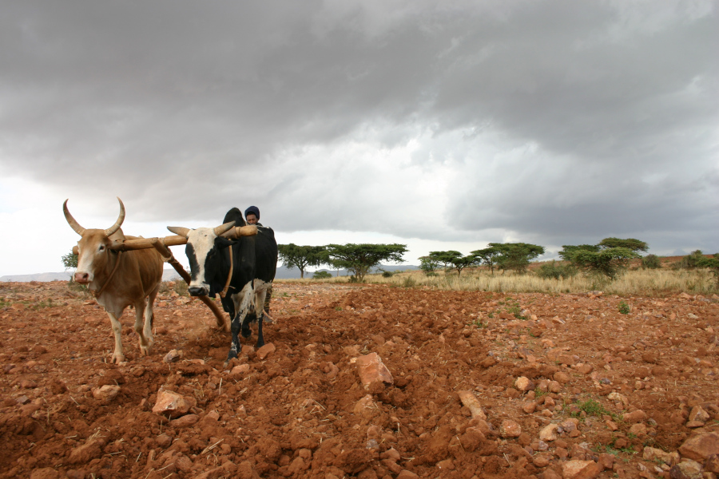

(Nigrizia settembre 2016 - qui il pdf)
Le mesas dell'Agame
La vita dei contadini del Tigray in un trekking ad alta quota tra le ambe di arenaria rossa dell'Agame, campi coltivati e fichi d'india
Testo, foto e cartografia di Fabio Artoni
Aratura con i buoi sull'amba di Erar, a quasi tremila metri di altezza, tra colonie di babbuini che vivono in cima all'amba e sulle pareti a strapiombo
Quando siamo partiti per il lungo trekking che ci avrebbe portato in giro per montagne e valli del Tigray, nel nord dell'Etiopia, ho pensato con sollievo che sembravamo esattamente quel che eravamo, turisti. Non rientravamo in categorie sospette come quelle degli antropologi o ancora misteriose come quelle dei viaggiatori solidali. Nei campi e sulle ambe non avremmo trovato monasteri o artigianato locale ma sculture di rocce rosse; vento che soffia talmente forte da entrare nei pensieri, come cantava un vecchio blues; gente che lavora i campi facendo quello che tentano da sempre gli uomini: addomesticare la natura per prenderne il meglio.
In Etiopia le famiglie di contadini, gli smallholder, sono tredici milioni; più di settanta milioni di molti giovani e adulti e pochi anziani; la terra appartiene allo stato ma loro hanno il diritto di coltivarla, ma non hanno più di un ettaro a testa in media; da sei a otto parti su dieci di quel che producono lo consumano, il resto quasi lo svendono. La terra ai contadini fu, a metà anni Settanta, il vero addio all'Etiopia feudale, forse ancor più dell'addio all'Imperatore Haile Selassie. Sono tanto famosi nei report internazionali quanto ignoti al mondo, gli smallholder. In queste valli del Tigray guardiamo le loro facce che guardano i germogli; qualcuno ci dice che i nostri piedi sono benedetti, perché con noi è arrivata la pioggia; gli anziani hanno esperienza, ma con il suo aratro e la sua coppia di buoi, un ragazzo sembra un torero su una biga.
La nostra guida si chiamava Mulat, trentadue anni, di Adigrat. A metà anni Ottanta era un neonato quando anche da queste parti la carestia lasciò migliaia di tombe senza nome e cattivi ricordi in chi sopravvisse; ne aveva sette quando nel 1991 i partigiani tigrini dopo venti anni di lotta si presero la nazione e cacciarono il negus rosso Menghistu; stava giocando a pallone quando nel 1998 l'aviazione eritrea bombardò Adigrat. Ora tra le due nazioni c'è una pace fragile, ma dall'Eritrea si scappa e il regime è una corte solitaria e feroce, mentre l'Etiopia entro dieci anni vuole diventare una nazione middle income.
Paesaggio dall'amba di Erar, a circa 3000 metri di altezza. I rifugi sono gestiti dalle comunità locali
Per farcela l'Etiopia deve scommettere sugli smallholder. Se andranno oltre la sussistenza, verso l'agricoltura commerciale, allora la nazione decollerà con la rivoluzione verde. Altrimenti bisognerà aspettare quella industriale e l'agribusiness delle multinazionali; e salari e cartellini da timbrare. Se c'è un posto in Africa dove la terra ai contadini ha speranze di vittoria, è il Tigray. Le statistiche dicono che qui, in quindici anni, gli sforzi delle comunità locali hanno riforestato o tolto all'erosione un milione di ettari di territorio; dimezzato la percentuale di quelli che vivono sotto la soglia di povertà, dal sessanta al trenta; addirittura conquistato l'autosufficienza alimentare. Il Tigray è più verde ora di quanto sia mai stato negli ultimi centoquarantacinque anni.Come è stato possibile questo traguardo in un posto che sembrava destinato alla desertificazione e all'abbandono? Gli investimenti del Governo e quelli delle Agenzie Internazionali, certo. Ma soprattutto i contadini, che sono rimasti. Le teorie per “aumentare la resilienza al cambiamento climatico “ sono messe in pratica tra questi campi. Nella piana di Guaghot tre generatori pompano acqua dai pozzi in pietra che raccolgono l'acqua piovana. Si coltiva ovunque, persino sulle verticali delle colline terrazzate. Le macchine del mulino girano a mille, c'è la fila di sacchi fuori, e la vecchia ruota da macina piantata in terra è un cimelio. Incontriamo uno dei tanti vivai di queste parti, con piantine di ulivi e acacie.
Il successo della riforestazione in Tigray ha spinto il governo a un annuncio: “Entro dieci anni riforesteremo 15 milioni di terreno in tutta Etiopia”. Questa valle è un anticipo di quello che diventeranno le altre valli quando i piloni dell'alta tensione che stanno crescendo tra cactus e acacie trasporteranno energia. L'Etiopia sta costruendo in tutto il paese grandi centrali idroelettriche. Il progetto più colossale è quello della diga sul Nilo Azzurro e infatti si chiama la Diga del Grande Rinascimento Etiopico. Sui media internazionali fa notizia per i timori di impatto ambientale e perché sottrae all'Egitto la supremazia di sempre sulle acque del Nilo. Ma il punto di vista dei contadini di qui è troppo di parte per cercare problemi; per loro, questo “luce sia” è un posticipo di Genesi.
Camminiamo tra sentieri segnati da cactus a candelabro e fichi d'india. Consolidano il terreno e proteggono le colture dalle bestie al pascolo. (Sarà vero che il fico d'India non è autoctono ma fu importato un secolo fa in Etiopia da un monaco italiano, siciliano?). Spuntano dal terreno enormi gabbioni pieni di pietre; donne e uomini li costruiscono dove l'erosione scava crepe profonde. Decine di volte la guida mi indicherà i terreni salvati in questo modo. Non so come, ma la Banca Mondiale ha stimato che in Tigray questi operai dello sviluppo in venti anni hanno smosso novanta milioni di tonnellate di terra con le mani.
Contadini e religiosi dell'Agame, in un giorno di festa, con il netelà (scialle) bianco. In Etiopia le famiglie di contadini sono 13 milioni, circa settanta milioni di giovani, adulti e (pochi) anziani. In media, coltivano da mezzo a un ettaro di terra
Mulat dice che la sua generazione vuole fare dimenticare Bob Geldof. Ma la questione smallholder non è solo umanitaria: è una priorità nazionale per la crescita. Tecnicamente si chiama ADLI, Agriculture Development Lead Industrialization. Ma per capire la tenacia che i tigrini ci mettono c'è un racconto su Meles Zenawi – tigrino, dal 1991 premier dell'Etiopia fino alla morte quattro anni fa - che piace molto alla gente. Dopo un'altra sconfitta in casa della nazionale etiopica Zenawi guardò quel campo di calcio così verde e morbido e piatto e disse: “Così non serve a niente, diamolo ai contadini da zappare”. Con appezzamenti così piccoli meccanizzare l'agricoltura non sarà la priorità. Per i contadini sarà più importante avere credito per acquistare le sementi, una assicurazione per quando i raccolti vanno male, magazzini per stoccare i raccolti e strade per avvicinare i mercati.L'Agriculture Transformation Agency sta mappando in piccole parcelle tutta l'Etiopia con rilevazioni satellitari e prelievi di terreno. Un lavoro colossale. Il sistema si chiama Ethiopian Soil Information System e, se mantiene quel che promette, produrrà in Etiopia e distribuirà fertilizzanti adatti per ogni tipo di terreno. Pare che le rese potrebbero addirittura raddoppiare. Le imprese cinesi che costruiscono strade e ponti fanno i loro affari ma ogni metro di strada asfaltata è un colpo ai fianchi dei negadi, i commercianti, quelli che comprano a man bassa subito dopo il raccolto. I negadi sanno che i contadini hanno fretta di vendere perché hanno bisogno di denaro contante per pagare i debiti; perché l'aria dei mercati è troppo piena di allegria per non avere un soldo in tasca; perché riportarsi a casa il carico su un carretto vuol dire sempre perderne un po' per strada; e perché un giocattolo ai bambini si deve pur portare ogni tanto. Se avesse un muro della denuncia questa gente ci scriverebbe su: abbasso i negadi!
La siccità di questi anni nel Corno d'Africa è la peggiore degli ultimi cinquanta. Colpa del Nino. Anche in Tigray si sta all'erta, ma si vede il risultato del lavoro di questi anni. Le mappe del Famine Early Warning System segnano in rosso altre zone, a est e giù dagli altopiani. E' da quelle parti che più di dieci milioni di persone avranno bisogno di cibo.
Penso a un libro, Unheard Voices, di un docente dell'Università di Addis Abeba, Fekade Azeze. Dieci anni dopo la carestia degli anni Ottanta, Azeze girò per le campagne in cerca di canzoni, detti popolari, lamenti funebri che dovevano essersi cristallizzati in versi nel momento della crisi peggiore; versi che c'erano prima che arrivasse la Bbc e Salgado e che rimasero dopo che tutti quanti fecero le valige. Dagli accademici è stata chiamata “Letteratura di resistenza”; a me ricordano pensieri scritti su una scatola di fiammiferi prima di uscire dalle trincee: rabbia, preghiere, imprecazioni, rimorsi. E' un libro che gela il sangue e che risveglia ricordi tristi; e capisco perché non se ne trovi più in giro nemmeno una copia, neppure ad Addis Abeba. Ma anche nella capitale, dove anche se non piove poco importa, la gente comune si prende la pioggia come se cadesse su qualcun altro, molto lontano. Aspettano sotto una pensilina, arriveranno a casa tardi per la cena, e dicono tutti Temesghen, Grazie a Dio. Sembra che pensino a tutti i contadini che questa notte non dormiranno, discuteranno con la moglie, perché devono rispondere a una domanda: “Seminiamo, domani?”. Sotto questa pensilina d'autobus gocciolante la questione smallholder sembra più un sentimento nazionale che una priorità nazionale.

Le ambe dell'Agame sono geologicamente delle mesas, quello che rimane dell'attività erosiva dei fiumi e del vento
Il trekking tra le comunità dell'Agame può partire da diversi punti vicino al capoluogo, Adigrat, e prevede cammini lungo le creste e saliscendi tra le varie ambe, tra i 2000 e i 3000 metri di altezza. I rifugi principali sono Erar, Goghot, Enaf e Shimbrety, in posizioni panoramiche ed esposte. Come nella tradzione spirituale del nord est Tigray, ci sono antichi monasteri e chiese scavate nella roccia (rock-hewn churches). Maryam Bezhuan, Guaghot e Maryam Kiat sono a pocoa distanza dal sentiero principale.
Sull'amba di Erar il gestore è il capofamiglia di uno dei quattro nuclei che vivono quassù. Una cosa strana perché qui c'è più sole che brucia e più pioggia che slava e più sassi rispetto alla valle; ma c'è anche una piccola sorgente di acqua. Quest'uomo ha perso la figlia adolescente sei mesi fa. La sua fattoria è anch'essa a pochi metri dallo strapiombo e un giorno un bue spinse la ragazza con le corna fino a farla precipitare. La fattoria è una casa in pietra rettangolare, con gli spazi per ragazzi, adulti e anziani, sementi e scorte e attrezzi, gli animali. Il patio interno è senza tetto, per fare girare l'aria, però qui è coperto da una grossa rete metallica. Come mai? L'uomo mi dice che è perché di notte entravano i leopardi e si prendevano le capre. Dunque su queste ambe non ci sono solo grossi babbuini, a centinaia, ma anche leopardi... Come si fa a vivere tra i leopardi da una parte e uno strapiombo dall'altra? La cosa non lo preoccupa, la sua famiglia ha sempre vissuto così. Però adesso ha deciso che manderà i figli a scuola, gli troverà un posto in valle, perché i tempi sono cambiati e la scuola è un diritto. Dice proprio meptè, diritto. Nel libro Unheard Voices la fame si chiama Agurt e un detto ammonisce: “Mangia frugalmente, vesti frugalmente. A meno che tu non voglia vedere tornare indietro i figli di Agurt”. Questi contadini vivono ancora con molto poco e molta fede, ma non bisogna più credere a chi dice che “in questi posti la vita scorre uguale da migliaia di anni”. Qualcosa è cambiato.
Un vivaio e un mulino comunitario nella piana sotto le ambe. Riforestazione ed elettrificazione sono i processi strutturali a van per proteggere il suolo, incrementare la resa per ettaro, aggiungere valore ai prodotti dell'agricoltura
Troviamo la scuola giù in valle. E' ora di ricreazione. Le ragazze cantano su una melodia dolcissima: “Ora che siamo così belle dove è il truccatore, e dove il sarto, e dove il fotografo?”. Come se non bastasse cantano vicino a una lavagna sotto un albero, il massimo della poesia. Ma ci emozioniamo anche per docce e pozzo in calcestruzzo e le taniche in fila per portarsi a casa l'acqua potabile; perché le scuole sono anche presidi sanitari. Un'altra salita, l'amba di Shimbrety e un altro rifugio di pietra sullo strapiombo. La guida mi dice che se non fossimo troppo in alto da qui si vedrebbe la casa di un ex guerrigliero, che adesso è Ministro degli Esteri. Mulat ha il suo numero di telefono, e qualche volta lo chiama per Pasqua. E risponde? Certo, mi dice, e mi chiede sempre “Ha piovuto? I contadini hanno già seminato?”